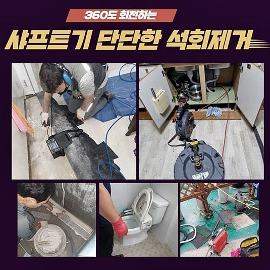
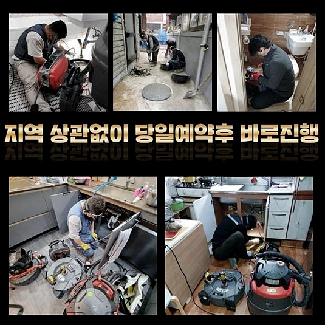
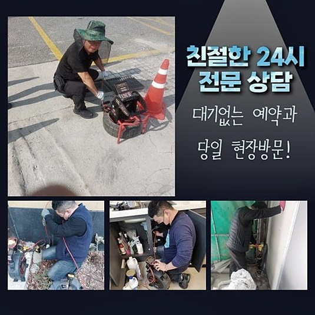
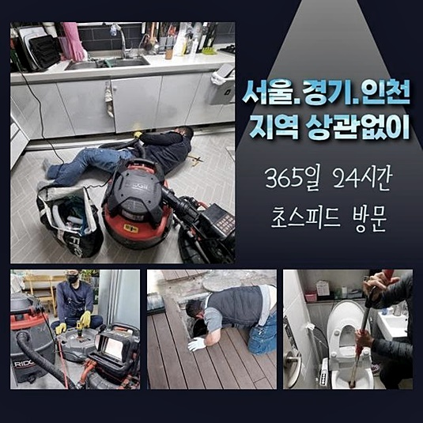
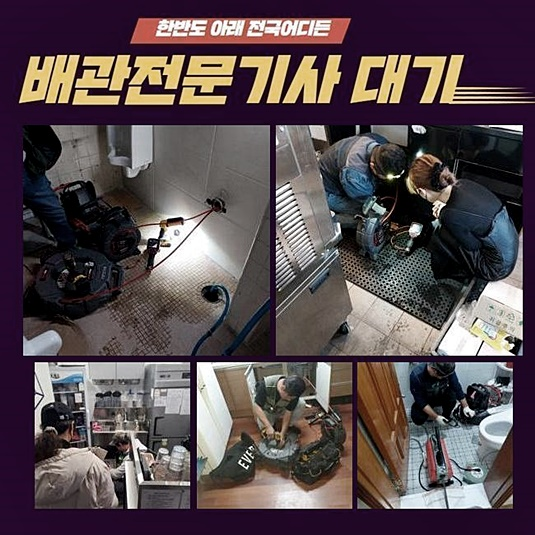
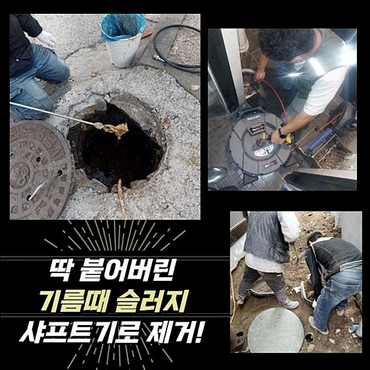
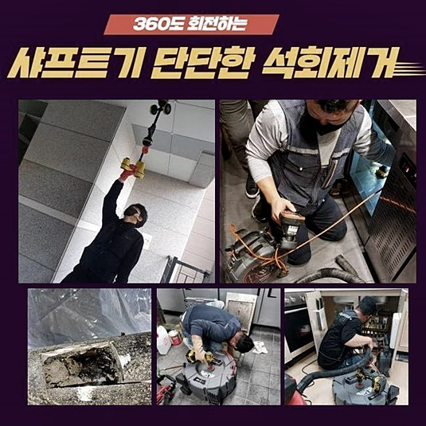

🏠 부천 소사본동화장실하수구뚫음 송내동 하수구뚫는비용 물샘전문업체
용인시 처인구 배관막힘 전문 시공 후기

📋 작업 개요
- 위치: 용인시 처인구, 수원시 영통구, 화성시 동탄
- 서비스 유형: 배관막힘, 고압세척, 내시경점검
- 작업 일시:
- 업체명: 하수구수사대 (010-5615-2118)
🔍 문제 상황
부천 소사본동화장실하수구뚫음 송내동 하수구뚫는비용 물샘전문업체
어제 저녁 저희 전문가는 고객의 전화를 받아 하수관의 불량을 점검 해보려고 현장으로 출동하셨습니다
의뢰인분께서는 샤워시에 물이 더디게 내려가는 듯한 느낌을 느끼고는 있었으나 별다른 어려움을 주지는 않을 거라고 가볍게 넘기셔서 의뢰를 맡기거나 하지 못해서 문제가 커졌다고 하셨습니다
짐작 하셨던대로 얼마 지나지 않아서 하수라인 내부에서 오수가 배출되지 않아 정체되기 시작하면서 배수관 주변에 오수가 역류하고, 배수관을 통해서 악취들이 나게 되었어요
문제점이 확대되는 것을 늦게나마 깨닫고 서둘러서 당사로 일어나는 문제를 처리해달라고 의뢰 해주셨어요
배수구 오수 배출의 빠르기가 떨어지게 되면서 일상에서 정체로 인한 현상들이 일어난다는건 배수라인의 문제들을 나타내는 중요신호입니다
이런 문제점을 안일하게 생각하고 미루게 된다면 심한 문제들이 일어날수도 있으니 방치하지 마시고 문제점을 처리하시는게 중요해요

🔎 원인 분석
💡 전문가 진단: 정밀 진단 장비를 사용하여 슬러지의 고착 여부를 판명하고 타격/세척 작업을 실시했습니다.
침전물이 달라붙어 노후화 될수록 하수관을 막히게끔 만들며 이러한 진행들로 막힘현상이나 물이 내려가는 속도의 늦춰짐에 따라 연관된 사태들이 일어납니다
일상적으로 음식을 하면서 배출이 되는 쓰고남은 오일이나 버리는 음식물들과 씻을때 쓰게되는 샴푸나 린스 후 머리카락과 이물질이 배수라인에 엉켜서 배수로의 순환을 방해합니다
그러한 오염물이 노후화 될수록 하수라인의 안쪽부위를 점차 좁게해서 오수가 잘 나오는게 어려워져요
이와같은 사태를 알고있으면서도 신경쓰지 않은 상태로 해결을 미루신다면 악취와 역류등의 문제까지 악화될 우려가 생기고 하수관 내벽으로 달라붙은 침전물이 하수와 섞여 썩기 시작하면서 지독한 냄새가 발생하는 원인들로 기여하게 됩니다
배관의 문제를 미연에 막으시려면 일상에서 작은 실천이 필요해요
한가지 예를들자면 요리할때는 폐오일을 페이퍼타올로 한번닦고 음식에서 나오는 찌꺼기들은 종량제봉투를 이용하여 모아서 폐기하는 방법이 도움이 돼요
샤워시에는 하수구 근처를 깨끗하게 청소하시고 작은 이물질들을 제거하는 방법이 중요합니다
이렇게 배수관 막힘현상이 생기는 경우에 권장되는 수리를 할수있는 타이밍을 놓친다면 문제의 지점이 커지게 되면서 비용적인 부담감이 커지겠지요

🔧 작업 과정
하수시스템이 고장난 현재 상태를 클린하게 해결하고자 내부를 들여다보는 기기들을 사용해서 원인이된 지점을 파악하는 것이 중요합니다
종합적인 진단을 미리 보는것이 귀찮다고해서 생략하고 계획도 없이 기기를 사용해서 일반적인 과정만 진행한다면 막힘이 일어난 문제점을 찾아내지 못해서 전과 같은 이유로 동일하게 문제현상이 반복해서 발생 할 거예요
이와같은 상황에서 전문진을 찾으실때는 사전 상담을 통해서 안을 보는 특수장비를 사용해서 정확하게 문제점을 먼저 진단하고 이후 과정을 진행하는 업체인지 내용들을 정확하게 문의 해보시고 공사를 시작하는게 안전한 방법들이예요
저희팀은 복잡한 사례일지라도 오랜시간을 쓰게되는 작업들이 예상된다 해도 마다하지 않고서 정확한 문제지점을 진단 완료한후 필요한 작업들을 진행합니다
문제가 된 부위를 찾기위해 내시경장비를 배수관에 밀어넣어 전반적인 검사를 확인해보니 하수라인이 끝에서 만나게되는 중요한 하수시스템에 부패되기 시작한 불순물이 단단하게 굳어지면서 흐름을 방해하고 있는걸 알게 되었습니다
본관은 배수라인의 핵심위치에 있기때문에 계전기나 샤프트 장비처럼 침전물을 조각내서 배출하는 장치만 이용해 시공하려고 하면 막힘문제가 일어난 부분까지 기기가 들어가지 않는 어려운 상태에 놓일수도 있는 가능성들이 높아져요
그러한 경우에는 하수관을 강한 압력으로 세척하여 전체라인을 한번에 청소 하는것이 필요합니다
고압력의 세척과정은 인체에 해로운 약들을 이용하지 않아서 크게 위험하지 않은 작업이고 고압의 기기로 노폐물을 밀어 내보내는 과정들을 진행하므로 하수관 내벽에 적재된 오염원을 말끔하게 없애는 작업이예요
폭넓은 경험들을 갖춘 전문가가 하수관의 설비구조와 특수한 성질을 이미 잘 알고 있어 배관의 생김새마다 섬세한 압력들을 이용해 세척을 반복적으로 시행하면서 오랫동안 막혀있던 불순물이 조각나서 밀려나오고 있는 상황을 볼 수 있었어요
배관청소를 진행하면서 예상했던 양보다 상당량의 불순물이 밀려나오는 현장들이 자주 있어서 보호를 위한 장비를 사용하여 수리할 주변장소를 대비해두고 작업에 들어가며 완벽하게 수리가 종료되면 작업지 주변으로 손해를 끼치를 상황이 생기지 않게끔 나온 노폐물을 청결하게 폐기하고 있어요
강한압의 장비를 이용할땐 생각했던 것보다 더많은 이물질들이 폭발하듯이 뿜어져나와서 대비장비를 다 붙여놨지만 주변장소까지 오염되기 쉽습니다
책임감 있는 모습으로 작업을 완료 하고나서 말끔하게 청소하며 작업을 종료합니다


✅ 작업 완료
이 글을 차분히 읽으시면서 하수라인의 막힘사고가 의심되는 경우에 짧은 기간내에 전문적인 업체에 문의를 해보는것이 매우 중요한 대응책인걸 느끼고 계실거예요
일상 속에서 일어나는 하수시스템의 오류사항을 빠르고 정확하게 해결해주는 전문적인 기술자를 알아보고 계시다면 지금당장 문의 주세요
다양하게 발생하는 배수관 문제를 해결한 전문가들이 고객님의 주소지로 방문하여 전반적인 사태들을 자세히 살펴보고 사례자의 불편 사항을 가능한 부담되지 않는 선에서 처리하는 것을 목표로 정성을 다해서 모시겠습니다




⚠️ 하수구 배관 막힘 예방 및 관리 가이드
- ✅ 머리카락, 비닐, 물티슈 등 물에 분해되지 않는 이물질은 절대 흘려보내지 마세요.
- ✅ 기름기 많은 식기는 설거지 전 키친타올로 먼저 기름때를 닦아내세요.
- ✅ 주기적으로 배수구에 뜨거운 물을 가득 부어주어 유지방 고착을 방지하세요.
- ✅ 작업 후 1년 이내 재발 시 무상 A/S 보증 서비스를 제공합니다.
💡 핵심 정리
- 확실한 장비 작업(내시경 점검 및 샤프트 스케일링)으로 원인을 뿌리 뽑습니다.
- 작업 후 1년 이내에 동일한 부위 재발 시 100% 무상 A/S 서비스를 보장합니다.
- 서울 · 경기 · 인천 전 지역에 24시간 언제든 긴급 출동할 수 있도록 항시 대기 중입니다.
❓ 자주 묻는 질문 (FAQ)
🚨 용인시 처인구 배관막힘 문제로 고민이신가요?
정확한 원인 진단과 확실한 시공으로 재발 없는 해결을 약속드립니다.
24시간 긴급 출동 | 서울 · 경기 · 인천 전지역 | 1년 내 재발 시 무상 A/S